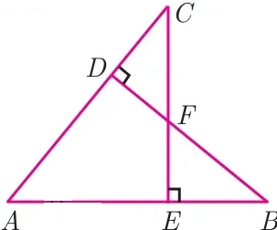
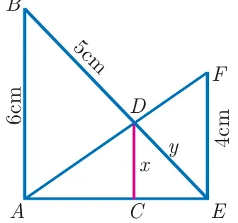
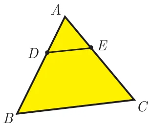

Unit Exercise - 4
- In the figure, if \(BD \perp AC\) and \(CE \perp AB\), prove that (i) \(\Delta AEC \sim \Delta ADB\) (ii) \(\dfrac{CA}{AB} = \dfrac{CE}{DB}\)

- In the given figure \(AB \parallel CD \parallel EF\). If \(AB = 6\) cm, \(CD = x\) cm, \(EF = 4\) cm, \(BD = 5\) cm and \(DE = y\) cm. Find \(x\) and \(y\).

- O is any point inside a triangle \(ABC\). The bisector of \(\angle AOB\), \(\angle BOC\) and \(\angle COA\) meet the sides \(AB\), \(BC\) and \(CA\) in point \(D\), \(E\) and \(F\) respectively. Show that \(AD \times BE \times CF = DB \times EC \times FA\)
- In the figure, \(ABC\) is a triangle in which \(AB = AC\). Points \(D\) and \(E\) are points on the side \(AB\) and \(AC\) respectively such that \(AD = AE\). Show that the points \(B\), \(C\), \(E\) and \(D\) lie on a same circle.

- Two trains leave a railway station at the same time. The first train travels due west and the second train due north. The first train travels at a speed of 20 km/hr and the second train travels at 30 km/hr. After 2 hours, what is the distance between them?
- \(D\) is the mid point of side \(BC\) and \(AE \perp BC\). If \(BC = a\), \(AC = b\), \(AB = c\), \(ED = x\), \(AD = p\) and \(AE = h\), prove that
(i) \(b^2 = p^2 + ax + \dfrac{a^2}{4}\) (ii) \(c^2 = p^2 - ax + \dfrac{a^2}{4}\) (iii) \(b^2 + c^2 = 2p^2 + \dfrac{a^2}{2}\)
- A man whose eye-level is 2 m above the ground wishes to find the height of a tree. He places a mirror horizontally on the ground 20 m from the tree and finds that if he stands at a point \(C\) which is 4 m from the mirror \(B\), he can see the reflection of the top of the tree. How height is the tree?
- An Emu which is 8 feet tall is standing at the foot of a pillar which is 30 feet high. It walks away from the pillar. The shadow of the Emu falls beyond Emu. What is the relation between the length of the shadow and the distance from the Emu to the pillar?
- Two circles intersect at \(A\) and \(B\). From a point \(P\) on one of the circles lines \(PAC\) and \(PBD\) are drawn intersecting the second circle at \(C\) and \(D\). Prove that \(CD\) is parallel to the tangent at \(P\).
- Let \(ABC\) be a triangle and D,E,F are points on the respective sides \(AB\), \(BC\), \(AC\) (or their extensions). Let \(AD : DB = 5 : 3\), \(BE : EC = 3 : 2\) and \(AC = 21\). Find the length of the line segment \(CF\).